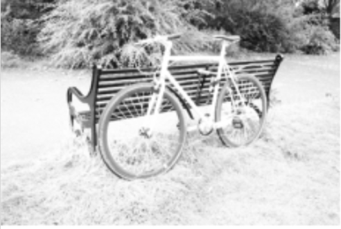
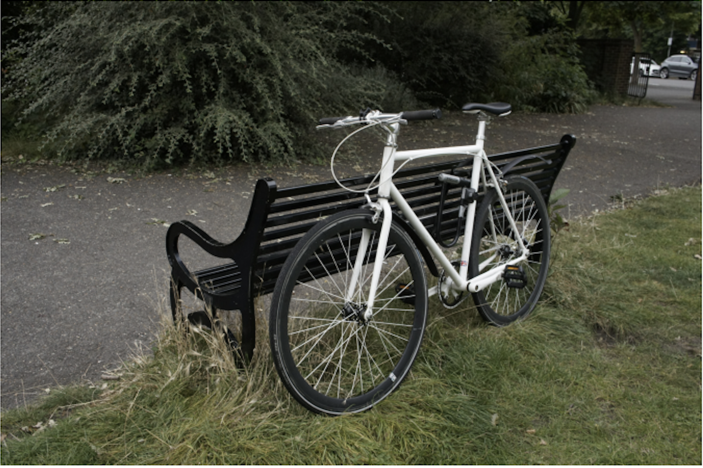

LGDWT-GS
简单摘要
在此基础上，我们扩展了框架以处理多光谱数据。所提出的多光谱 3DGS 使用共享几何和特定模态的外观参数联合重建 RGB 和近红外 (NIR) 视图，确保跨频段的光谱和空间一致性。

在此基础上，我们扩展了框架以处理多光谱数据。所提出的多光谱 3DGS 使用共享几何和特定模态的外观参数联合重建 RGB 和近红外 (NIR) 视图，确保跨频段的光谱和空间一致性。
核心创新
第一，我们提出了一种用于少镜头 3D 重建的新方法，该方法集成了全局和局部频率正则化，以稳定几何结构并在稀疏视图条件下保留精细细节。
第二，我们还引入了一个新的多光谱温室数据集，其中包含在受控条件下从不同植物物种捕获的四个光谱带。
第三，对我们的多光谱数据集以及标准基准的实验表明，所提出的方法比现有基线实现了更清晰、更稳定和光谱一致的重建。
技术细节
为了获得更密集和更稳定的初始化，使用深度先验和多视图立体重建来生成额外的伪点。该公式对齐渲染图像和参考图像之间的全局频率结构，确保低频和中频内容的连贯重建，同时抑制嘈杂的高频伪影。这种共享几何、双外观设计可促进跨光谱相干性并增强稀疏视图条件下的精细细节重建。


3.1 LGDWT-GS框架
这种集成增强了大规模结构一致性和细粒度纹理恢复，而无需修改可微分泼溅渲染器。在少镜头设置中，由于有限的视图重叠，COLMAP 只能重建一些稀疏点。为了获得更密集和更稳定的初始化，使用深度先验和多视图立体重建来生成额外的伪点。
3.1.1 全球载重吨监管
全局 DWT 损失强制渲染图像和地面实况图像之间的大规模频率一致性，从而促进跨视图的结构稳定性。使用一级 Haar 小波变换将每个图像分解为四个频率子带。该公式对齐渲染图像和参考图像之间的全局频率结构，确保低频和中频内容的连贯重建，同时抑制嘈杂的高频伪影。
3.1.2 补丁式DWT监督
尽管全球监管强制执行整体频率一致性，但局部区域仍可能表现出重建不足的情况，特别是在平滑的低频区域中嵌入精细的高频细节的情况。渲染图像和地面实况图像被分为固定大小和步长的非重叠补丁。
3.2 多光谱扩展
LGDWT-GS 框架经过扩展，可支持双模态重建，在共享 3D 几何结构下联合建模 RGB 和 NIR 图像。由此产生的结构即使在稀疏视图条件下也能在所有光谱带上提供可靠的几何对准。这种共享几何、双外观设计可促进跨光谱相干性并增强稀疏视图条件下的精细细节重建。
3.3 数据集
为了构建所提出的多光谱温室数据集，我们采用了 MSIS-AGRI-1-A 系统。每次捕获均与以相同波长运行的四通道 LED 照明模块同步，以在所有波段保持一致的光谱照明。从红、绿和红边缘通道生成伪 RGB 复合材料，以便于使用 COLMAP 进行运动结构 (SfM) 重建。
$$ \mathcal{L}_{\text{total}} = \mathcal{L}_{\text{L1}} + \mathcal{L}_{\text{SSIM}} + \alpha \mathcal{L}_{\text{gDWT}} + \beta \mathcal{L}_{\text{pDWT}}. $$
这条式子给出了论文中的一条核心计算关系。理解时可以先看左侧最终想得到什么结果，再看右侧的 L、total、L、L 等量如何共同决定这个结果在方法链路中的作用。
$$ \mathcal{L}_{\text{Global-DWT}} = \sum_{s \in \{LL, LH, HL, HH\}} w_s \, \|\widehat{\mathbf{I}}_{S} - \mathbf{I}_{S}\|_1, $$
这条式子给出了论文中的一条核心计算关系。理解时可以先看左侧最终想得到什么结果，再看右侧的 L、Global、DWT、in 等量如何共同决定这个结果在方法链路中的作用。
$$ E_{LF}(x,y) = \frac{\|\mathbf{I}_{LL}(x,y)\|_1}{ \|\mathbf{I}_{LL}(x,y)\|_1 + \|\mathbf{I}_{HF}(x,y)\|_1}, $$
这条式子给出了论文中的一条核心计算关系。理解时可以先看左侧最终想得到什么结果，再看右侧的 x、y、I、LL 等量如何共同决定这个结果在方法链路中的作用。
$$ \mathcal{L}_{\text{Patch-DWT}} = \frac{1}{N_p}\sum_{p=1}^{N_p} \sum_{B \in \{LH, HL\}} \|\widehat{\mathbf{I}}^{\,p}_{B} - \mathbf{I}^{\,p}_{B}\|_1, $$
这条式子给出了论文中的一条核心计算关系。理解时可以先看左侧最终想得到什么结果，再看右侧的 L、Patch、DWT、in 等量如何共同决定这个结果在方法链路中的作用。
$$ \mathcal{L}_{\text{Multi}} = \mathcal{L}_{\text{RGB}} + \lambda_{\text{NIR}}\, \mathcal{L}_{\text{NIR}}, $$
这条式子给出了论文中的一条核心计算关系。理解时可以先看左侧最终想得到什么结果，再看右侧的 L、Multi、L、RGB 等量如何共同决定这个结果在方法链路中的作用。
$$ \text{mask} = \max(\text{RGB}_{\text{res}}, \text{NIR}_{\text{res}}), $$
这条式子给出了论文中的一条核心计算关系。理解时可以先看左侧最终想得到什么结果，再看右侧的 mask、max、RGB、res 等量如何共同决定这个结果在方法链路中的作用。
实验结论
实验部分主要围绕 结合 DWT 可以提高边缘清晰度，但不能完全解决几何不一致问题 展开。结果表明，通过结合这两个组件，LGDWT-GS 实现了最佳的整体性能，产生清晰且连贯的重建，具有保存完好的叶子边界和最少的伪影。
| Method | PSNR | SSIM | LPIPS |
|---|---|---|---|
| Mip-NeRF360 | 15.22 | 0.351 | 0.540 |
| DietNeRF | 13.86 | 0.305 | 0.578 |
| RegNeRF | 18.66 | 0.535 | 0.411 |
| FreeNeRF | 19.13 | 0.562 | 0.384 |
| SparseNeRF | 19.07 | 0.564 | 0.392 |
| 3DGS | 16.94 | 0.488 | 0.402 |
| DNGaussian | 19.73 | 0.669 | 0.301 |
| LGDWT-GS (ours) | 20.46 | 0.726 | 0.279 |
| Method | PSNR | SSIM | LPIPS |
|---|---|---|---|
| Mip-NeRF360 | 19.78 | 0.530 | 0.431 |
| DietNeRF | 19.11 | 0.482 | 0.452 |
| RegNeRF | 20.55 | 0.546 | 0.398 |
| FreeNeRF | 21.04 | 0.587 | 0.377 |
| SparseNeRF | 21.13 | 0.600 | 0.389 |
| 3DGS | 19.93 | 0.588 | 0.401 |
| DNGaussian | 22.13 | 0.676 | 0.301 |
| LGDWT-GS (ours) | 22.41 | 0.692 | 0.298 |




4.1 标杆管理
实验部分主要围绕 我们引入了用于少镜头 3D 重建的端到端基准测试管道，该管道统一了多个高斯泼溅基线的数据处理、训练和评估 展开。结果表明，基准测试包是完全模块化的，允许通过统一的 API 注册新的数据集和新的高斯分布方法，而无需重新设计环境或修改现有管道。
4.2 定量结果
实验部分主要围绕 具体来说，我们使用三个输入视图对 LLFF 进行评估，这是标准的少镜头设置 展开。结果表明，表显示 LGDWT-GS 在三视图 LLFF 数据集上显着提高了性能。
4.3 定性分析
实验部分主要围绕 图显示了基线 3DGS 和我们的 LGDWT-GS 在标准基准上的定性比较 展开。结果表明，结合 DWT 可以提高边缘清晰度，但不能完全解决几何不一致问题。
4.4 消融研究
实验部分主要围绕 NEHD 使用 Sobel 核来提取边缘响应，并使用梯度幅值的可微分直方图来聚合响应，以对齐渲染图像和地面实况图像的边缘分布，以改进 展开。结果表明，与 NEHD 不同，LGDWT-GS 采用 DWT 损失来监督整个频谱。
理解评价
如果把这篇论文放回问题背景里看，它真正的价值在于：我们提出了一种用于少镜头 3D 重建的新方法，该方法集成了全局和局部频率正则化，以稳定几何结构并在稀疏视图条件下保留精细细节，解决了现有 3D 高斯分布 (3DGS) 的关键限制。这说明作者不是只补一个局部模块，而是在重新组织问题该怎样被解决。
最能支撑这个判断的，还是实验给出的证据：我们引入了 LGDWT-GS 框架，它将频域监督集成到 3DGS 管道中，以改进少样本 3D 重建。换句话说，这些设计并不只是概念上更完整，而是实实在在改变了最终结果。
当然，它离真正成熟的方案还有距离：当前方案的局限在于它仍然受制于计算资源、输入质量或场景复杂度，距离真正稳健的大规模部署还有差距。后续更值得继续推进的方向，是 未来继续提升效率、泛化能力以及在更复杂场景下的稳定性。